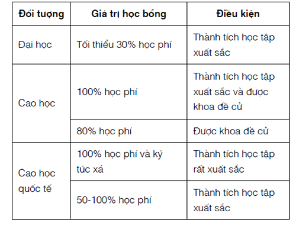

Tác giả: Daniela Dragomir (người Rumani).
Nghề nghiệp: Chuyên gia Tư vấn kinh doanh.
Nơi sinh sống: Bucharest (Rumani).
Y aprendiste el español en la escuela?
– No, de las telenovelas. – De verdad? 31
[31]
Tiếng Tây Ban Nha, dịch ra tiếng Việt: Thế bạn đã học tiếng Tây Ban Nha ở trường? – Không, tôi học nó qua những bộ phim truyền hình dài tập. – Thật á?
Tôi đã học tiếng Tây Ban Nha qua các bộ phim dài tập Mỹ Latinh được gọi là telenovela. Mùa hè ở Baragan, một vùng đồng bằng nam Rumani, nóng đến mức bụi trải dài trên các con đường nông thôn, độ dày lên đến năm xentimét. Vậy nên ngồi ở nhà xem các bộ phim truyền hình Mỹ Latinh là một cách giải trí tuyệt vời vì nhiệt độ trong nhà mát mẻ và dễ chịu.
Dần dần tôi nhận thức được là việc xem telenovela cho tôi cơ hội để giao tiếp với hơn 437 triệu người nói tiếng Tây Ban Nha trên toàn thế giới. Cơ hội mở ra cho tôi tiếp cận với các nền văn hoá mới, với sách, nhạc, thời sự trực tuyến bằng tiếng Tây Ban Nha thật tuyệt vời và tôi cố gắng tận dụng nó mỗi ngày.
Sau này khi học tiếng Pháp và tiếng Anh, tôi cũng sử dụng bí quyết từ trước đó là xem video với phụ đề nhằm làm phong phú vốn từ vựng và sửa cách phát âm của mình.
Bí quyết học ngoại ngữ khi xem các video hoặc bộ phim với phụ đề có hiệu quả lớn là vì não của bạn hoạt động tích cực trong quá trình xem để tìm ra sự liên kết giữa các từ, âm thanh và ý nghĩa. Xem với phụ đề là một cách tuyệt vời để học hỏi về văn hóa và cách sống mới, bên cạnh đó còn nâng cao khả năng ngoại ngữ của bạn.
Trong khi theo dõi những câu chuyện về đời sống của các nhân vật trong telenovela, não của tôi cũng đồng thời học được một ngôn ngữ mới mà không phải nỗ lực nhiều. Một nghịch lý là, trong khi tôi hầu như quên hết những thứ bắt buộc phải học ở trường, tôi đã học được một ngôn ngữ mới để có thể sử dụng cả trong đời sống lẫn trong công việc theo cách hoàn toàn tự nhiên. Đối với tôi, yếu tố thư giãn giúp tôi duy trì trí nhớ tốt hơn. Hãy nói cho tôi và tôi sẽ quên. Hãy dạy tôi và tôi sẽ nhớ. Hãy thu hút tôi và tôi sẽ học.
13 năm sau mùa hè ở Baragan, trong quá trình học tập ở một nơi khác là Canada, tôi đã có cơ hội luyện tập tiếng Tây Ban Nha với người bản địa là một số đồng nghiệp trong nhóm của chúng tôi. Bạn có thể tưởng tượng rằng lúc đó tôi đã giao tiếp rất trôi chảy và tự nhiên. Tôi đã không chỉ sử dụng được ngôn ngữ mà còn thể hiện được sự hiểu biết của mình về văn hoá Tây Ban Nha và Mỹ Latinh. Bởi vì phim ảnh cho chúng ta bước vào những thế giới khác nhau, kể cho chúng ta những câu chuyện về một nơi xa xôi nào đó, giới thiệu cho chúng ta các tình huống thật có thể xảy ra trong cuộc sống của người bản địa. Bằng cách này, khoảng cách giữa con người trên khắp thế giới xích lại và chúng ta thậm chí có thể hiểu được những câu chuyện cười của nhau.